|
旅団世界TRPG 第3巻『夏の旅団と神秘のカード』 人気投票 結果発表！ |
| ◆第 1 位◆ クバ / 半人半鳥の射手 37 点 | |
| 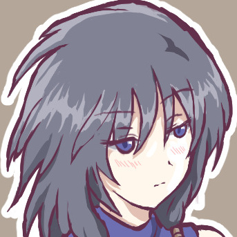 |
クバ 「たくさんの投票ありがとう！ 団長の良さと団長ロボの機能美が認められて私も誇らしいよ。次のミッションでも旅団の潤滑油として常識力を発揮していけるよう頑張るぞ」（PLより） |
|
【クバへのコメント】 ●デュエリスト爆誕……！ 出目さえ走ればベテランの渋さが光る！ ●今回唯一の皆勤登場キャラとしてのご活躍、お疲れ様でしたー！ ●リゼットロボをネタの為に作ったと思ったら普通に戦闘力高い！ ●ユリエルからの第一印象は悪かったのに、好意が高かったのは感慨深いものがありました。 ●リゼットに次いで好きなキャラ。 ●箱入りなのに（だからこそ？）なぜニセ団長の写真集に目を輝かせているのか……。カードゲームや文筆業で手腕を発揮していたので、引退後も安心ですね。自分で撃った相手に守護をかける、いつかのトラウマ引きずっていそうなムーブが面白かったです。 ●まず見た目が好みすぎます……。手羽なのがいいですよね、手羽。それとゲーム的な攻略とRPを本当に上手に噛み合わせる手腕にも惚れています。 | |
| ◆同率 2 位◆ リゼット / 半獣人の騎士 32 点 | |
| 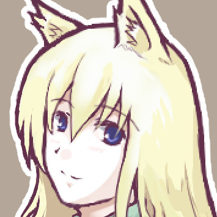 |
リゼット 「今回は不在の期間が長かったですが、たくさんの投票を頂きました！ ありがとうございます！ しかし改めて事件後の現状を見ると色々とんでもないことになってて、いっそどこか遠いところにでも行こうかなって……。え、新しい任務ですか？ ……ええと、これからも団長として頑張りますのでよろしくお願いします！！」(PLより) |
|
【リゼットへのコメント】 ●自分そっくりのエッチな写真集が三冊も出てたり、自分の偽物が街の男を千人食いしてたり、胸元全開な格好でカードゲーム大会に出る羽目になったり、とんでもないお色気ヒロイン枠でしたねえ……。 ●今回も体調不良や不在の間に自キャラがとんでもない汚名を着せられていたりする中、お疲れ様でした！ ●ベアへの容赦のなさに笑っちゃっいました。 ●流石の主人公力ですな！ ●祖父が出たり娘が出てきたりで設定がもりもり増えて来てて笑った。 ●白いワンピースが似合う！ 服のボタンを外す意味がわかった後も閉めない姿勢、インモラル（目的のためには手段を選ばない）寄りになってきた気がします。旅団の良心が失われた……。 ●団長のロールプレイが正統派でかっこよくて好きです。ロボ作られたり、写真集出されたりしても、怒らず諦念してるのがいっそう魅力的です。 | |
| ◆同率 2 位◆ パピオリア / 獣人の少年 32 点 | |
| 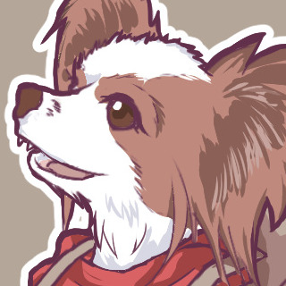 |
パピオリア 「みんな投票ありがとう！こうやって感想をもらえると、死んだぼくも浮かばれるよ。ユリエルや仲間に繋いでもらった命だし、次の旅に同行できたらまたがんばってサポートするよ。その時はよろしくね！（上目遣い）」（PLより） |
|
【パピオリアへのコメント】 ●ライセンス試験から一皮剥けたナイスドッグ。 ●動画化した回と併せて、初参加お疲れ様でした！ ●こんなにかわいいのに過去には雑に扱われてきたんだなぁ……。 ●可愛くて、戦闘支援もできて最強ですね！ ●執拗なわが娘呼びめちゃめちゃ好き。 ●シビアな現実に直面しても全くブレない鋼メンタルが素敵。かわいさを自覚して有効活用するあざとさも好きです。これだけルックスが良ければ戦闘で役立たずでも仕方ないな～と思いきや、特にラストバトルで大活躍だわクリティカル回避で沈まないわで、めちゃくちゃタフな印象に。年齢のわりに大人っぽい立ち位置だったので、お散歩したり水浴びしたりお留守番する無邪気な姿も見せてほしい。 ●キャシールちゃんとの関わり方が好き！ でも純粋なキャシール×パピオリアが実質否定されちゃったのは残念かも？ | |
| ◆第 4 位◆ オーボス / ドワーフの大工 29 点 | |
| 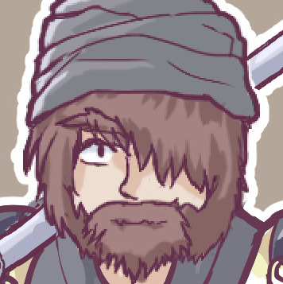 |
オーボス 「ワシが4位……ハイパーメディアクリエイターオーボスが4位？ これは何かの間違い、いやっ多才過ぎて近寄りがたい雰囲気なのかもしれん。 そんな才能の塊オーボスから素敵なお知らせ、ベストアルバム『オーボスベストヒッツ2023』が発売になります。早期購入特典は握手券、予約を忘れずに！」(PLより) |
|
【オーボスへのコメント】 ●シリアス以外はなんでもこなせる漢……！ ●今回も多芸・有能なキャラ性能を奇行キャラというデバフでバランス取るかの様な絶妙なプレイングを楽しませていただきました。お疲れ様です、良い時間に感謝を！ ●今後は理想のアームレストを作っていくのかな？ ●シリアスなオーボスさんを見れて良きでした。 ●今回の探索パートは拘束されまくりなの笑ったけど相変わらず戦闘になると強い。 ●戦闘よし、舞台よし、工芸（リゼットロボ）パーフェクトのあふれる才能がまぶしい。料理は今後パピオリアくんに任せた方がよさそうです。享楽の館でハッスルする姿も輝いてました！ | |
| ◆同率 5 位◆ キャシール / アマチュアアイドル 18 点 | |
| 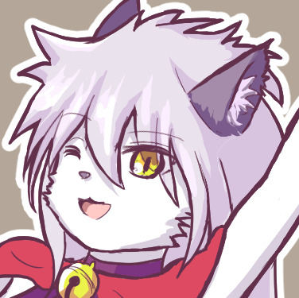 |
キャシール 「え、同率だけど私がNPCトップ！？ みんなー投票ありがとうー！！ って不幸なのがいいのー！？ それでもがんばって立ち直っていくから見ててねー！ あっ」（ファンブルでずっこける） |
|
【キャシールへのコメント】 ●今回、一般人代表という様な印象を受けた不憫な娘さんに一票を。 ●苦労人なところが好き。どうにか立ち直ってまた色々巻き込まれて欲しい。 ●不憫だ……。成功してほしい。 ●不幸可愛い。立ち直ってほしい。 ●事前情報（ビジュアルと職業）からは想像もつかないくらい、ダメージ受けてガタガタしてるし、アイドル活動もへっぽこすぎて驚きました。キャシールのファン、かなりマニアックな趣味してる疑惑。 ●立ち絵の華やかさとは裏腹に悲惨な目にしかあってないのがイイ！ 幸薄とは別ベクトルで不憫だけど、なんだかんだ乗り越えれそうな安心感もあって推せますね。 | |
| ◆同率 5 位◆ アルバート / 銃使いの傭兵 18 点 | |
| 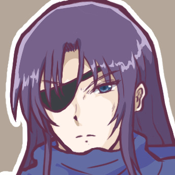 |
アルバート 「並んでNPCトップだと！？ 感謝の限りだ！ 今回は珍しく戦闘で活躍してたが、次もこう行きたいものだな……。女装本は別に興味な……ムッ！？ それは置いといて、一人で冒険してるだけだと娼館にも処女の件にも関わることがないんだ！ 俺も脱処女に向けてがんばるから応援してくれ！」 |
|
【アルバートへのコメント】 ●でやがったな大好きだぞお前。 ●友情出演ありがとうございます！ ●戦闘ではカッコよく、シナリオではいつものアルバート君が見られて嬉しかったです。 ●初登場なのにすごい見覚えのある人だ！ ●本人はいたって真面目なはずが、周りに振り回されてお笑いキャラになる安定のポジション。いくらなんでも娼館や処女がわからないのは世間知らずすぎませんか！ 誰か間違った知識を植え付けておいてほしい（すでにそんな兆候あったが） | |
| ◆第 7 位◆ ＧＭ / ゲームマスター 16 点 | |
|
ＧＭ 「ホット(?)なスタートからの夏休み展開、お楽しみいただけたでしょうか！ 今回は闇深い話もセクシーな話も多い1回でしたが、私もとても楽しませていただきました。今後も何かやるかも知れませんので、もし出たらぜひまたご覧ください！」 |
|
|
【ＧＭへのコメント】 ●今回も一年以上に及ぶマスタリングと編集、イラストレーション、動画作成と本当にお疲れ様でした！ ●毎回めちゃくちゃ面白いです！ プレイヤーとGMが楽しそうにプレイしているのがすごく伝わってきます！ ●お腹が捩れるほど笑ったり、ストーリーにゾワゾワしたり、大変楽しませていただきました。 ●次巻、外伝？ 楽しみに待ってます！ 応援してます！！ ●不健全かつグロくて悲しい、でもちょっとだけ救いが見える、光と闇のシナリオ楽しかったです。カードゲーム大会ベスト8の「5. おどおどしている青年」みたいなキャラは大変需要がありますので、今後どこかで出してくださると幸い。 | |
| ◆第 8 位◆ ユリエル / 堕とされた天使 15 点 | |
| 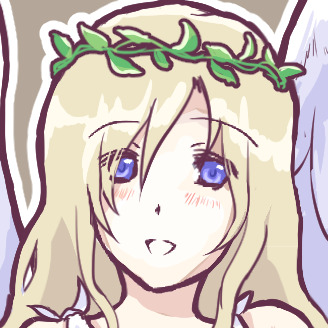 |
ユリエル 「たくさんの投票ありがとうございます！ 来世は幸せになれるといいねと祝福をいただいてしまったんですが、今世もすごく幸せでしたよ！ また皆さまとお会いできる日を楽しみにしています。インモラルだったのは……忘れてください……！(顔を覆う)」 |
|
【ユリエルへのコメント】 ●インモラルで常識が足りてない天使ちゃん、まさかのリゼット団長の……！ ●あなたの前途に、幸多からんことを、切に、願う。 ●短期決戦だったから奇跡的にヤベー性格が世間にバレずに済んだけど、消滅しなかったらスキャンダル続きのアイドル生活だったかも。 ●また会えるといいね。 ●欲を言えば団長との絡みがもう少し見たかったですが、どこか寂しさを抱える親子関係もアリですね。インモラルなはずなのにダイスの女神が諭すかのような出目をだすのに笑いました。 | |
| ◆第 9 位◆ ネムリ / 半獣人の薬師 8 点 | |
|
ネムリ 「闇はお尻から出る、これは重要な知見なんですよ。過酷な環境でも長く生きてしまう病原は、お尻から移動することはあっても完全に消滅させることができないんです……ってコメントするしかないじゃないですか！？ ありがとうございます！」 |
|
|
【ネムリへのコメント】 ●闇は尻から出る。 | |
| ◆第 10 位◆ オジ / 旅団員のおじさん 7 点 | |
| 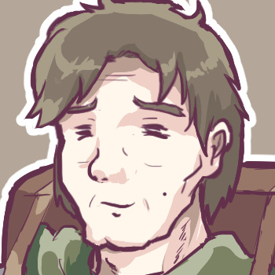 |
オジ 「ええ！？ 前回1点だった私にこんなに投票が！？ やはり、味方だと思っていた人物が敵に回るインパクトは時代を問わず強いんでしょうかね……皆さまありがとうございます」 |
| ◆同率 11 位◆ ガルナ / ガルフの妹 6 点 | |
| 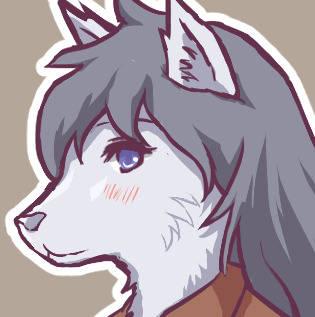 |
ガルナ 「えっ、つまりとろけた後の体がかわいいんですか！？ ふさふさな楕円形を描いて灰色にぬってもらえたらそれっぽくなりますよ！ 次からは空気形態になりそうですが応援お願いしますね！」 |
|
【ガルナへのコメント】 ●かわいい！ ぜひ次回も出てきて欲しいです！ ところでとろけた姿の挿絵は……。 | |
| ◆同率 11 位◆ ガルフ / 狼獣人の剣士 6 点 | |
| 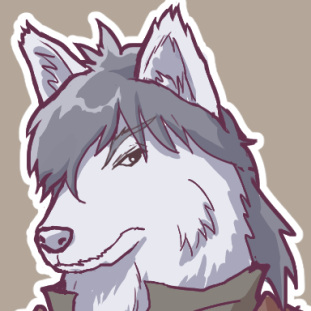 |
ガルフ 「ガルナは空気だったりとろけてたり話がかみあわなかったりしてちょっと変な妹なんだが、それでもオレの妹なんだ……！ みんなの投票で同率11位になれたのは少しうれしかったぞ！」 |
| ◆第 13 位◆ マギー / 紅の武装商隊の団長 5 点 | |
| 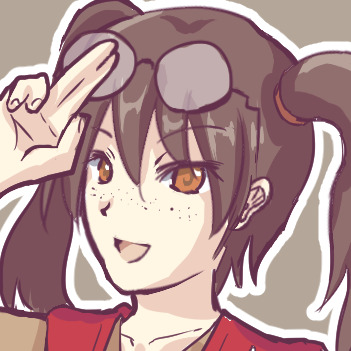 |
マギー 「あー闇堕ちからの復活はあれね、終わってみると大人になるための通過儀礼なのかなって思ったわ。悲しみを知ってこそ、同じ悲しみを持った誰かに手を差し伸べられるのよね！ みんなもつらい現実に負けないで、たくましく生きてね！」 |
|
【マギーへのコメント】 ●悲惨な境遇で、やむを得ない闇堕ちからの復活に心が動かされました。不憫キャラはたくさんいますし、PCに頼らずとも大成功するたくましい姉御に育ってくれると嬉しい。旅団世界のNPC、女性の方が精神的に強いのか……（ラスボス三人衆を見ながら） | |
| ◆同率 14 位◆ ゴリラス / 街の衛兵隊長 4 点 | |
| 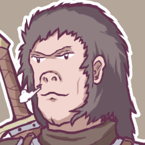 |
ゴリラス 「うおおお命はなくなりましたが第1巻人気投票0点からのリベンジですぞぉぉー！ 投票感謝しますぞ！ 我の生きざまを後世に伝えてくだされー！」 |
|
【ゴリラスへのコメント】 ●久し振りに出てきて嬉しかったけど、かっこいい事されてしまった。辛い第一章の象徴的な出来事。 ●まさかあんなドラマチックな退場をするだなんて……。深刻なシリアスじゃないけど忘れるには印象的すぎる最期でした。 | |
| ◆同率 14 位◆ ベア / 戦闘狂の巨漢 4 点 | |
| 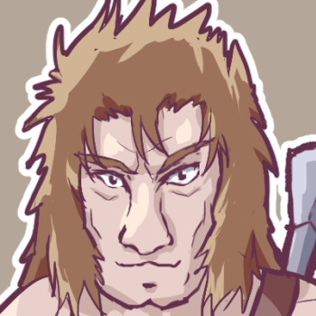 |
ベア 「上のゴリラは逝ったのにこっちは死にぞこなっちまったぜ……っと俺への初コメント助かるぜ！ オーボスは俺にとっても注目のライバルだからな！ 死ぬ気でやりあえるなら俺は何度だってラスボスになるぜ！？」 |
|
【ベアへのコメント】 ●TRPGってダイスの乱数があるせいで偏ると戦闘の緊迫感がゼロだったり、逆に負けイベ並みに理不尽だったりしますけどベアの存在でラストバトルの緊迫感が一気に上がった印象があります。オーボスさんが唯一本気を出せる相手的なイメージ！ | |
| ◆同率 14 位◆ ティセ / テレサの娘 4 点 | |
| 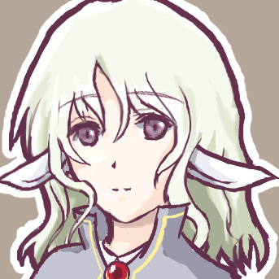 |
ティセ 「第二ボタンの件は、リゼットさんの大きさだとそれくらいいるかなって思っただけで、その……私の過失です……。かわいいコメントもありがとう！ ヤギ下半身はクラスメイトの人にも人気だよ！」 |
|
【ティセへのコメント】 ●そうだね、第二ボタンも外すよね。よくやった。 ●他の薄幸キャラといい、この手の表情の女の子が本当にかわいいですよねぇ。ゲームに出てきたら毎周仲間にしちゃいそう。望まずに下半身ヤギになったのがイイ……。 | |
| ◆第 17 位◆ 神聖Ｐ / 神聖劇団の変な人 3 点 | |
|
神聖Ｐ 「ハッハァー！ 伝わらなくてもとりあえず好意を表現するのは大事でぇーす！！ 嫌いになれないということは好きということデースねーHAHAHA！」 |
|
|
【神聖Ｐへのコメント】 ●好意の押しつけはズルい！ けど嫌いになれない。 | |
| ◆同率 18 位◆ セレ / ネムリの友人 2 点 | |
| 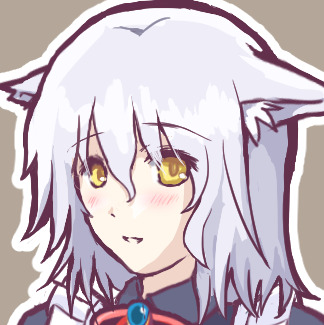 |
セレ 「か、かわいいコメントありがとう……作ってくれた衣装、いいよね……」 |
|
【セレへのコメント】 ●やっぱりかわいい。 | |
| ◆同率 18 位◆ テレサ / ｸﾞﾘｰﾝﾀｲﾄﾞ旅団長 2 点 | |
|
テレサ 「あら、ほとんど出番なかったのに私にも票入れてくれてありがと！ 今じゃあの子たちを見守るくらいの距離感になってるけど、まだまだ私もがんばるわよ～」 |
|
| ◆同率 20 位◆ シュバルツ / ホワイトドーン旅団の黒馬 1 点 | |
| 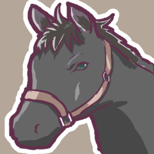 |
シュバルツ 「ヒヒ～ン！？（出番ほぼなかったのに票が入ってるー！？ ありがとう！）」 |
| ◆同率 20 位◆ エリン / 宿の女将 1 点 | |
| 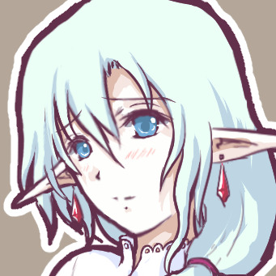 |
エリン 「私、けっこう出番があったと思うんですが……やっぱり人妻キャラは流行らないのでしょうか……でも1票でもうれしいです」 |
| ◆第 22 位◆ ローガン / リゼットの祖父 0 点 | |
| 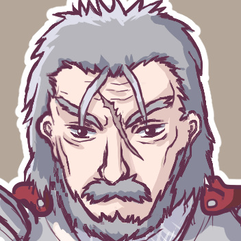 |
ローガン 「ちょっと待つんじゃ、0点じゃと！？ 最下位になると2巻くらい後でインパクトある死にざまで爆散したりするんじゃぞ、見てないけどワシは知っとる！ 次こそは目立つからの！！」 |
| ◆その他◆ | |
|
【その他キャラへのコメント】 ●リゼットロボ（※ＧＭ：なんと2票もありました！） ●それぞれのパートに登場する悪漢だったりゴロツキだったりの、立ち絵のないNPCが絶妙な立ち回りをするのが好きです。最後に写真集を持ってきた写真館の男はハードボイルドなおじさんに違いない！ |